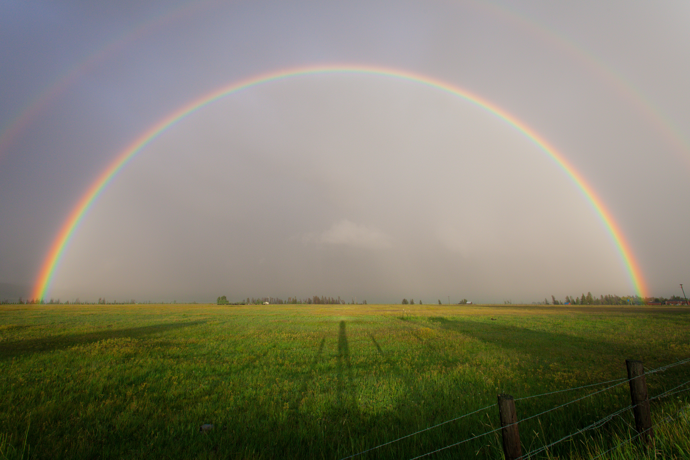
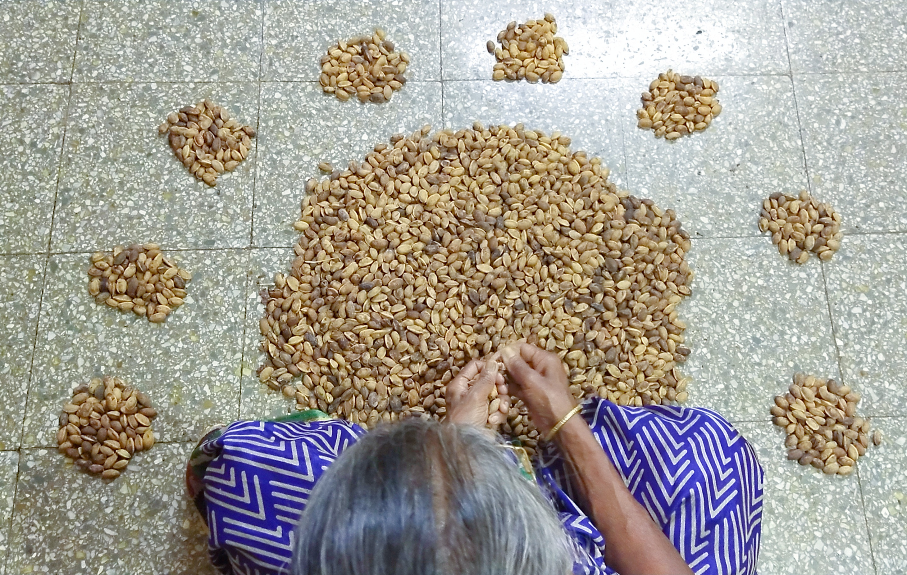

Suitable climate
It is a hardy perennial plant that grows well in warm, humid and, tropical climate.
Height
It is a mid-sized evergreen that grows to a height of 40 to 50 ft (12-15mts) and has a span of 25 to 30 ft (7.6 to 9.1 m). The plant starts bearing flowers after 4-6 years and attains stability in production after another four-five years.

Root system
Well developed tap root system.
Suitable soil
It can adapt to varying soil conditions from sandy, lateritic, gravelly to black soils with moderately good porosity. It can grow in volcanic and degraded soils, making it one of the best trees for dryland reclamation.
Medicinal Uses
The bark and leaves are medicinally important.Anti-carcinogenic,it treats Leukemia.Anti-viral,it treats Malaria and other viral infections.Anti-septic,it relieves dysentery.It treats Rheumatoid Arthritis.

Edible Uses
Seeds produce edible oil. Please watch the documentary Lakshmi Taru by GoaBiofuels (three parts) on YouTube.
Environmental Uses
It is an eco-friendly tree. Large scale planting in waste lands facilitates waste land reclamation, converts the accumulated atmospheric carbon dioxide into oxygen and contributes in reducing the effect of global warming. It efficiently checks soil erosion, supports soil microbial life and improves groundwater availability.
Industrial Uses
The oil from nutlets can be used for making soaps, detergents, biofBIO-Fuels, lubricants and moreetc. The wood of this tree is insect- resistant and are used for manufacturing furniture, toys and others.etc.